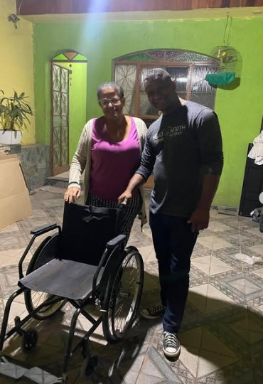
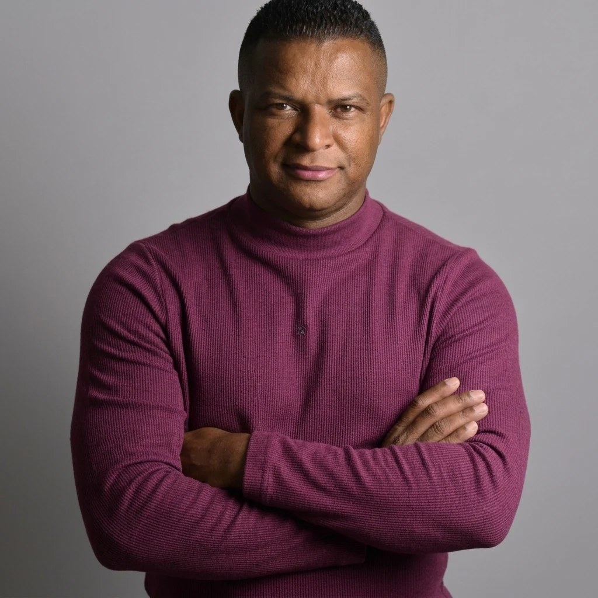
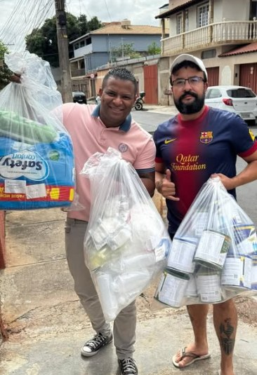
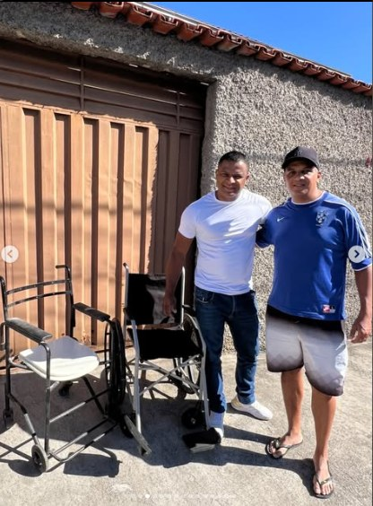
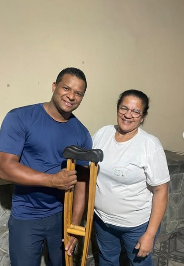

01 — MOBILIDADE
Entrega de equipamento de mobilidade
CONTAGEM, MINAS GERAIS
Conheça a trajetória, as iniciativas comunitárias e os canais de contato de Igor Araújo em Contagem, Minas Gerais.

RAÍZES EM
CONTAGEM
Igor Araújo é líder comunitário em Contagem, Minas Gerais. Sua atuação, registrada nas imagens desta página, inclui contato com moradores e participação em iniciativas de apoio comunitário.
Este espaço reúne registros visuais e canais públicos de contato, com respeito às pessoas e às histórias compartilhadas.
Ver registros da comunidade ↗Registros de encontros, entregas e iniciativas de apoio comunitário em Contagem.

Entrega de equipamento de mobilidade

Iniciativa de apoio comunitário

Contato com moradores

Registro de entrega de equipamento
Registros fotográficos compartilhados para esta demonstração.
Uma seleção de retratos e registros das iniciativas comunitárias.
FALE COM IGOR